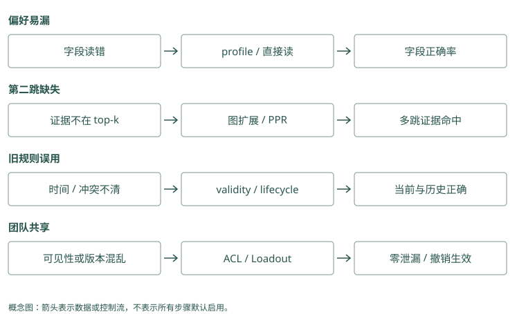

选型与演进路线
用你的失败，决定下一步学哪种技术
假设 Atlas 助手已经跑通最小事实库。现在有四个失败：用户默认语言偶尔丢失；批准人跨两份文档找不到；旧发布规则仍干扰；另一个团队资料串进结果。
这四个问题不需要同一种升级。稳定语言可以直接读 profile 或放小 core；跨文档证据可以试关系连接；旧规则先补纠正和有效时间；跨团队问题先修身份与范围。给第四个问题加重排，可能只是让泄漏的资料排序更好。
因此先选一个真实失败，保存原始输入、必要证据和实际结果。用这个例子推动接下来的比较，避免从项目功能表开始堆组件。
Mem0：助手隔天忘了“先检查迁移”，先试保存短记录并在发布前查回。若这就解决问题，暂时不必搭建复杂关系图。
Graphiti：助手知道平台组维护 Atlas，却找不到正式批准人。试把两份文档连到同一团队，再查齐批准链；这个失败更适合检验关系资料。
源码与边界（选读）
如果失败是几天后忘了迁移教训，Mem0 的短记录存取就值得先试；如果失败是维护团队、批准人和变更日期分散在多份材料，Graphiti 的关系与时间更贴题。先说明要避免哪种具体错误，再挑机制，才能知道试用时应查看哪种中间结果。
Mem0：选择 SDK 的理由应落在事实管线上
适合希望现有应用增加短事实提取与搜索的场景。先核对提取质量、语义池边界、scope 与 provider 成本。稳定语言丢失可能只需直接读取，不必更换框架；当前时间状态复杂则要明确外层版本责任。
Graphiti：选择时间图的理由应落在关系失败上
同名消歧、跨来源关系和晚到变更是更直接的采用理由。需要结构化抽取、driver、索引与时间过滤，运维负担比简单事实库多。先用批准链和历史默认证明收益，不为“图更先进”而增加组件。
起步：把你能解释的数据路径跑通
小型助手可以从第 4 章的思路开始：明确写入、按用户读取、手动替代、有限组装。需要 SDK 时考虑 Mem0；偏好密集时学习 Memobase 的资料整理；需要人审普通文本时考虑 Basic Memory。
在这个阶段，先有不使用记忆的对照和几条回归题。回归题是以后每次修改都再跑的案例，确认旧问题没回来。权限和删除从一开始就有基本边界，不应因为“先做简单版”而读全库。
Mem0：先存“默认中文”“先查迁移”“生产须审批”，再问“帮我发布 Atlas”。检查助手是否用中文、先检查、等审批，用这一次任务验证存取是否有用。
Graphiti：先写“Atlas 由平台组维护”“平台组发布由 Lin 批准”，再问“谁批准 Atlas”。确认答案 Lin 有两份原文支持后，再导入更多文档。
源码与边界（选读）
Baseline 是比较新方案之前的简单对照。给 Mem0 直接保存几条审核文字，再查是否正确返回；给 Graphiti 只输入维护与批准两份材料，核对对象、边与来源。小到能手工解释每个结果，之后增加提取、重排或时间变化，才看得清哪里开始出错。
Mem0：用直接保存建立最短 baseline
审核文本走 infer=False，用户和 source 由业务确定，查询采用 filters。之后再开启普通推断，比较正文是否丢条件。显式 update、delete、history 的语义先跑清楚，尤其验证删除历史残留，不把 API 名当隐私保证。
Graphiti：从极小 episode 集验证关系模型
先加入两份批准材料和一次批准人变化，查看实体 UUID、边来源和时间字段，再查询当前与历史。先限制类型和搜索配方，不同时启用全部社区与复杂重排。运行需要真实模型与图配置，教学伪调用不能代替部署验证。
第二个问题：记了，但找不准
如果原文在库里，却因措辞变化漏掉，比较关键词、向量和混合候选。MCP 和 Hippo 提供可学习的融合路径，Mem0 的池边界也要检查。若正确证据已在候选里但排名差，再试 cross-encoder 或 Jev，先只观察，不改变用户可见结果。
这种只观察的模式叫 shadow。它让你测重排会保留什么、会误删什么，再决定是否采用。别同时扩大候选、换 reader、开生命周期，否则遇到改善也说不清来自哪一步。
Mem0：教训 A 已保存但没返回。若初选没有 A，修初选；若初选有 A、打包时丢了它，修打包。不要把两种失败都叫记忆不准。
Graphiti：批准关系已保存，查询却用了今天而非目标日期。先修日期条件，再判断是否需要另一种关系搜索。
源码与边界（选读）
同样没返回 A，可能是 Mem0 第一批未找到它，也可能找到后被排低。Graphiti 可能只找到 Atlas 节点，却缺批准关系。先检查候选单位与编号，再试词搜索、额外查询或邻域扩展；不必一看到漏项就换整个数据库，更不能只调最后的排序权重。
Mem0：先定位 A 是池外还是排低
原文正确却不返回，检查 semantic results、keyword results 与 entity boosts。池外记录无法被外层 reranker 补回，可尝试扩大池或第二次受限查询。配置重排后还需 rerank=True，并记录错误回退是否发生。
Graphiti：先固定边搜索，再增加扩展
比较 edge BM25、cosine 与 RRF，必要时启用 BFS 补第二跳。若规范节点错误，增加遍历会放大问题，应修 ingestion。正确候选已经返回却没进 prompt 时，继续更换图查询没有收益。
第三个问题：需要关系、历史或长期整理
跨文档第二跳可以试 HippoRAG 的关联传播、Cognee 的结构管线、Graphiti 的关系搜索，也可以先用 Basic 的显式链接。要回答“当时谁负责”，再重点测有效时间，不要只测能不能找到一个人名。
近期问答越来越多时，可以学习 MemoryOS 的主题页面与提升；旧教训价值不同，可以试 Hippo 的反馈和寿命；笔记描述需要随新证据更新，可以试 A-MEM。多种记忆资源和队列需要统一管理时，再评估 MemOS，而不是为一个偏好字段引入完整资源层。
如果希望 Agent 自己控制读取和修改未来规则，Letta Code 是 runtime 路线，改变的不只是一个搜索函数。试用应观察实际工具调用、提交和后续编译，不只测试单次 recall。
Mem0：只问当前默认环境，应用读一条已核验记录即可。若开始问“15 日默认是什么”，再明确增加历史保存和日期选择规则。
Graphiti：需要回答变更前后批准人时，保存关系有效区间并按日期查。只问一个当前值，未必值得承担整套关系维护成本。
源码与边界（选读）
问当前默认环境，几张审核卡与明确读取规则可能足够；问 15 日批准人，则需要历史有效性。Mem0 可以由应用另存版本并查询，Graphiti 提供关系时间与解析，但也要过滤正确日期。比较的是写入、纠正和查询整条链要承担多少工作，不是哪个项目字段更多。
Mem0：长期版本可由外层补，成本需明确
metadata 能保存 source 与生效信息，但必须实现读取策略，ADD-only 不自动维护唯一当前值。若关系较少，事实表加显式版本可能更简单；若应用自己要补大量消歧、边查询和时间裁决，就应与图框架做成本比较。
Graphiti：时间字段与关系解析形成完整链的一部分
reference_time 辅助抽取，resolution 更新边，SearchFilters 控制读取，episode 回查来源。缺一个环节仍可能答错。长期巩固、半衰期和 Skill 审核不是因此全部内置，应另用宿主策略治理。
多人共享时，先建立可见范围
TencentDB 面向团队资产和 Loadout，Cognee、MCP 等服务也有不同授权边界。明确谁拥有会话、谁能共享 Skill、撤销如何影响缓存，再部署读取路径。Beacon 帮助补原始动作证据，不自动完成这些权限；Hermes 帮助选择已有候选，也不决定谁有权看。
一个可行组合是采集工具事件、把验证过的教训写成笔记、只对授权资料检索，再统一装入输入。不必每个项目都接一遍，选择能解释数据流和故障流的组合即可。
Mem0：Alice 与 Bob 各存一条同名 Atlas 教训。测试 Alice 搜索和按编号读取时都拿不到 Bob 的记录，再开放多人使用。
Graphiti：测试 Alice 只能查自己的 Atlas，也不能凭 Bob 的材料编号读原文。关系和来源两条路径都过关，再考虑共享图。
源码与边界（选读）
多人共享时，先列哪些用户能读哪个项目、关系和原文，再实现查询入口。Mem0 自定义 metadata 字段能承载项目名，却不会自动认证它；Graphiti group 能分区，却不证明调用者属于组。服务端将真实权限转成筛选条件，才能避免模型或客户端自行选中别人的资料。
Mem0：共享范围不能用任意客户端 metadata 代替
应用验证身份并选择私有、项目或团队事实集合，按 ID 操作也核验对象。一个客户端可读并不代表另一个可读，scope 设计要匹配共享政策。独立记录权限撤销与缓存清理，避免跨会话便利成为串线理由。
Graphiti：组分区与共享策略一起设计
独立团队可使用不同 group，共享资料通过授权查询或审核导入，不随意合并两个同名项目节点。即使配置支持多 group 查询，也先确定 caller 可读集合。查询后的原文展开同样受到这个集合限制。
给试用设一个能否通过的条件
不要写“试用一周看效果”，写成“这十个真实发布问题里，正确规则必须出现；演练例外不改长期默认；另一个用户的资料不进入候选；服务断开时不绕过权限”。再记录延迟和总费用，判断多一层机制是否值得。
维护、许可证和托管边界也要检查。下面表格保留路线对照，但它是查找候选的工具。MemoryOS、Memobase 等路线有教学价值，当前维护状态也可能使你选择借鉴机制而非直接依赖原项目。
Mem0：试用必须做到查回迁移教训、保留本次英文例外、隔离 Bob 的资料。三项有一项失败，就先修，不以“已经接上接口”算完成。
Graphiti：试用必须答对批准链、历史日期和同名项目三类题，并能读到支持答案的来源。只有图画得漂亮，不算通过。
源码与边界（选读）
试用通过可以要求：正确教训能被当前输入使用，单次例外不改默认，越权查询得不到资料，模型失败后原文可重试。Mem0 另外核对卡片与历史一致，Graphiti 另外核对对象合并、旧关系结束和来源回查。把条件写成可检查结果，不用“效果不错”代替验收。
Mem0：试用合同涵盖普通与失败路径
检查默认和例外提取、同义重复、精确错误码池外遗漏、更新实体清理、删除 history 残留，以及 LLM 超时。记录实际事实与最终输入，每一项都有预期，不以 README 分数代替。锁定后端和模型再测费用与延迟。
Graphiti：试用合同覆盖身份、时间与来源
同名不同团队不合并，晚到消息保持正确有效区间，演练不关闭默认，第二跳来源确实返回。另测 remove_episode 的共享支持与摘要影响、driver 故障和索引恢复。图能画出来只能证明其中很少的环节。
给 Atlas 做一次有理由的选型
假设只有 Alice 使用助手，项目资料不多，主要问题是跨会话漏掉发布检查。可以先把审核过的教训放进 SQLite 或一份项目笔记，按项目直接读取，再明确装入发布任务输入。此时不需要图传播，因为必要证据就在已知项目里；也不需要自动衰减，因为教训数量仍可人工维护。
运行一段时间后，错误码查询开始漏掉历史事件。先比较全文与现有搜索的候选，如果全文补回了必要记录，就保留混合候选。若两路都找到了记录，只是排名不对，再试重排。每一步都保留前一版本作为对照，不把一次升级顺手变成重写所有管线。
后来用户开始问“谁批准 Atlas”，证据散在团队文档里。若只有几条稳定关系，可以先维护显式链接或关系表；若对象多、文档持续增长，才比较图框架或 PPR。再后来需要问“上月谁批准”，就必须引入有效时间，而不能继续拿当前批准人回答所有日期。
第二个团队加入时，权限成为即时需求，无需等到所谓第四阶段。先隔离可读资产、检查每条检索路径和缓存，再考虑共享经验。原始动作还原困难时补采集；候选过多时补判别。组件加入的理由都来自一次明确的失败，而不是为了凑齐完整架构。
Mem0：Atlas 只有十条发布教训，主要问题是隔天忘记检查。先用短记录和明确读取解决，列出实际改善，不为未来猜测增加复杂流程。
Graphiti：后来要回答跨团队、跨日期的批准问题，再试关系和来源查询。保留原来的教训读取，不必因为新增图就把所有偏好也搬进去。
源码与边界（选读）
Atlas 初期只有几条发布教训，可以先用 Mem0 明确存取与注入位置。出现多团队批准链及批准人变更，再用 Graphiti 小图检验两份来源与日期查询。迁移要同时检查旧卡片如何转成新对象和关系，不能将旧正文搬进去就认定新结构已经正确。
Mem0：Atlas 初期可以只采用少量路径
先存核验教训并直接读固定规则，再为历史经历加 search；输入规模增长后验证推断与重排。若批准关系需要两次检索，记录这两次的成本，与显式关系表比较。保持一个简单无自动提取的对照，才能知道新增机制值不值。
Graphiti：批准链和变更出现后再验证迁移
把审核材料按顺序加入独立测试图，核对团队 UUID 和批准边，再引入日期过滤。应用 assembler 和权限策略尽量不变，避免迁移时同时更换 reader。通过自己的失败题再决定将哪些资料从事实池迁到关系图。
怎样判断一次升级应该撤回
试用前可以写出成功条件和撤回条件。假设新图方案找回了第二跳，却明显增加同名团队串线，且目前无法可靠纠正身份，便不应只看平均答题率保留它。可以暂时撤回自动建图，保留原始来源和已核验的显式关系，再继续研究消歧。
类似地，生命周期机制降低了输入长度，却把低频回滚步骤隐藏了；云重排节省了 token，却超出外发政策；平台功能丰富，却让一次故障难以恢复。这些都可能使净收益为负。减少组件并不会丢掉已经学到的东西，只要失败案例、来源数据和对照结果还在，就能以后重新验证。
最终留下来的方案，应让你能解释一条记忆从哪里来、为何被选中、何时失效、如何删除，以及服务坏了之后怎么办。达到这个程度后，项目名只是实现选择。继续演进时，用新增失败提出下一个具体问题，书中的机制和源码对照便能成为查阅入口。
Mem0：新增重排每题多花一次模型调用，五道漏检题却一题没改善。保留测试结果，撤掉重排，回查初选问题。
Graphiti：新增邻域扩展带回很多其他项目关系，却没补齐批准证据。撤回扩展，修对象身份或查询用途，不把更多结果当进步。
源码与边界（选读）
新评分增加费用却没有补回必要卡片，可以撤掉额外排序；新图扩展不断把不同平台组合并，可以先缩小自动建图范围。Mem0 与 Graphiti 都应保留简单可复现的对照与原材料。撤回某项复杂机制，不等于删除历史，更不等于免去权限和当前状态检查。
Mem0：复杂评分无收益时回到可解释读取
若实体 boost 增噪、云重排增加成本却不减少失败，可撤回相应配置而保留审核事实与源数据。不要把一次实验产生的更新留给 baseline。回滚范围包括 payload、辅助实体索引与应用缓存，历史记录只提供证据不自动恢复全部状态。
Graphiti：关系误合并无法控制时先缩小自动化
可以保留原 episode，暂用显式审核关系或较窄 schema，关闭不必要扩展，再研究 resolution。撤回前核对旧边有效性与摘要，必要时从事件重建。平均正确率提升不能抵消跨团队泄漏，安全失败应独立作为门槛。
动手检查
从自己的任务找一个失败，补完这三句话：“正确结果需要哪条证据；现在哪一步丢了它；我只改变哪一个机制来验证。”
答案提示：若第二句还写不出来，先保存候选和最终输入，不急着选新框架。试验通过后将失败案例保留为回归题，下一次修改继续检查。
选型表、试用条件与实现对照（选读）
按场景选，不按榜单选
| 场景 | 起点 | 何时升级 |
|---|---|---|
| 小型个性化助手 | SQLite/Postgres + fact/profile + hybrid search | 时间冲突、多跳明显时加图 |
| 快速 SDK 接入 | Mem0 | 核对 OSS/托管边界与成本 |
| 动态事实与时间查询 | Graphiti | 先验证结构化抽取可靠性 |
| 企业异构知识平台 | Cognee | 有平台运维与 schema 团队 |
| Stateful/self-edit Agent | Letta Code | 需要 Agent 管理 core context |
| 本地人机知识库 | Basic Memory | 接受 AGPL，偏显式笔记 |
| 自托管多客户端 | MCP Memory Service | 需要 auth/remote MCP/REST |
| Coding trace 复用 | Agent Beacon | 先解决敏感 trace 治理 |
| 团队 Agent 资产 | TencentDB Agent Memory | 需要 ACL、Skill、Wiki、CodeGraph |
| 生命周期/遗忘实验 | Hippo | 接受单维护者风险并自建评测 |
| 多形态 Memory OS 研究 | MemOS | plaintext 成熟后再碰 KV/parametric |
| 图检索研究 | HippoRAG / A-MEM | 不直接当生产 memory backend |
四阶段演进
阶段 1：可控事实库
先实现 remember / recall / supersede / delete，带 user scope、source、valid time、token budget。建立 50 至 200 条真实 query 标注集。
阶段 2：混合检索与反馈
增加 BM25 + embedding + RRF，记录候选与 outcome。若重排成为瓶颈，再引入 cross-encoder 或 Jev，并先 shadow。
阶段 3：层级和生命周期
加入 working/episodic/semantic，异步巩固、冲突、衰减和 Skill promotion。删除和重建必须可验证。
阶段 4：图与团队治理
只有当多跳、时间事实、跨来源 entity 和共享资产成为主要失败模式时，再引入 temporal graph、ACL、Agent Loadout 与多 Agent memory exchange。
最终检查表
- canonical 主仓仍活跃，而不是归档/迁移仓
- 许可证适合你的分发方式
- OSS 功能与托管功能分开验证
- benchmark 协议与你的场景一致
- 写入 precision、检索 recall、最终任务收益分别测量
- tenant filter 在检索前执行并有负面测试
- 原始 episode 与派生记忆可追溯
- embedding/schema/prompt 都有版本
- 删除能覆盖向量、图、缓存和派生摘要
- 记忆服务故障不会拖垮主 Agent
- 只有一个 context assembler
- 有不使用记忆的 baseline
最稳妥的 SOTA 路线不是复制最大的项目，而是把自己的失败查询变成持续回归集。维护活跃的项目值得优先读；最终留下哪套机制，应由你的任务收益、总成本和安全约束决定。
同一失败类型，候选路线如何取舍
偏好经常漏召回时，先比较 Mem0 query-fact 与 Memobase/MemoryOS 的稳定画像路径；若偏好本来就应该每次生效，Letta core 或 TencentDB 高层注入也可选，但要承担规则更新/权限边界。Memobase 的维护弱、MemoryOS 的提升阈值和 core 的常驻 token 是三种不同代价，不应用同一 README 延迟选胜者。
跨文档批准关系缺第二跳时，先用 Graphiti/Cognee 的关系检索、HippoRAG PPR 与直接 hybrid 在同一 corpus 对比。Basic 显式 link 适合可人工维护的知识，A-MEM 适合演化研究，Hippo 图 stream 适合已有本地 memory 池。若问题是历史状态，则需要 valid time 与冲突，不能只增加跳数。
旧教训越来越多时，对比 Hippo value/outcome、MCP horizon consolidation、MemoryOS promotion 和 A-MEM description evolution。分别测误遗忘、错误强化、摘要漂移；如果只有索引噪音，先做作用域与原文去重，不必上完整 OS。MemOS 的异步资源管理则适合多 backend/形态组织，不应只为一个用户字段引入。
团队共享需要 TencentDB 的资产/ACL/Loadout 或 Cognee/MCP 等服务的授权数据面，人审笔记可由 Basic 提供。Beacon 捕获证据，Hermes 筛候选，两者是互补层，不能替代这些 store。Letta 是 runtime 选择，Mem0 是 SDK 选择，这种不同层选型通常可以组合，但必须定义唯一最终 assembler。
阶段是验收顺序，不是强制购买顺序
四阶段表示先保证可控，再加复杂机制。明确有多租户需求时第一天就做权限；已有时间关系业务时可以直接试 Graphiti；数据绝不外发时不应先上线 Jev 再补隐私。每次升级至少留一个更简单 baseline，以及一个证明新机制必要的失败集。下面列出各路线最小试用合同，不表示已完成这些实测。

项目对照速查（选读）
本章对照结论
| 项目 | 选择它是为了什么 | 更简单的对照 | 试用必须交出的证据 |
|---|---|---|---|
| Mem0 | SDK 事实提取/检索生态 | 手工事实 + SQL/FTS | 提取正确、池边界、删除与总成本 |
| Memobase | 稳定 profile + event | 显式用户字段 | flush 延迟、例外合并、维护出口 |
| MemoryOS | 多层提升与画像 | 最近 turns + profile | heat 消融、摘要证据、提升正确 |
| Graphiti | 时变关系与来源 | validity 事实表 + hybrid | 消歧、晚到时间、历史查询 |
| Cognee | 异构平台/可选管线 | 固定 loader + chunk hybrid | route/schema 收益、恢复与运维 |
| HippoRAG | 关联/多跳 passage | dense/BM25/hybrid | PPR 第二跳收益、OpenIE 成本 |
| A-MEM | 描述/link 演化研究 | 静态笔记近邻 | 关闭 evolution 对照、邻居真返回 |
| Hippo | 本地 lifecycle/outcome | 静态分数 + 简单过期 | decay/outcome 分离、误强化、恢复 |
| MemOS | cube/scheduler/多形态研究 | 单文本 backend + 队列 | 实际模块成熟度、兼容/积压 |
| Letta Code | Agent 自管理 core/经验 | 固定 core + history tools | 主动工具与 commit/recompile 正确 |
| Basic Memory | 人审 Markdown 知识 | 普通文件 + 搜索 | 重建、rename/link、许可证与冲突 |
| MCP Memory Service | 多客户端统一服务 | 单客户端本地 DB | 每路 auth/scope、同步/删除 |
| TencentDB | 团队资产/Loadout/知识工具 | 小范围共享笔记 + ACL | 撤销、版本、服务链与注入一致 |
| Beacon | 跨 harness 行为证据 | 单 runtime 原生日志 | capture coverage、fidelity 与脱敏 |
| Hermes Jev Skills | 判别/filter/搜索控制 | 本地 rerank + deterministic checks | shadow/graded、云费用、故障回退 |
| 旧 Letta | 复现历史论文/API | 当前 Letta Code 对照 | 锁定 archive 版本，不作新生产入口 |